Past Events


Beats For A Cause
On October 28, IMPACT volunteered at the “Beats For A Cause” Event. At the event, volunteers helped coordinate several cultural music and dance performances, made poster boards and flyers, and helped to run the event booths and food stalls.
The “Beats For A Cause” event was conducted by “VTSeva Austin”, with a goal of empowering visually challenged students from different socio-economic backgrounds by providing them with boarding, education and medical supplies.
-Divya Jaganathan (IMPACT President)


 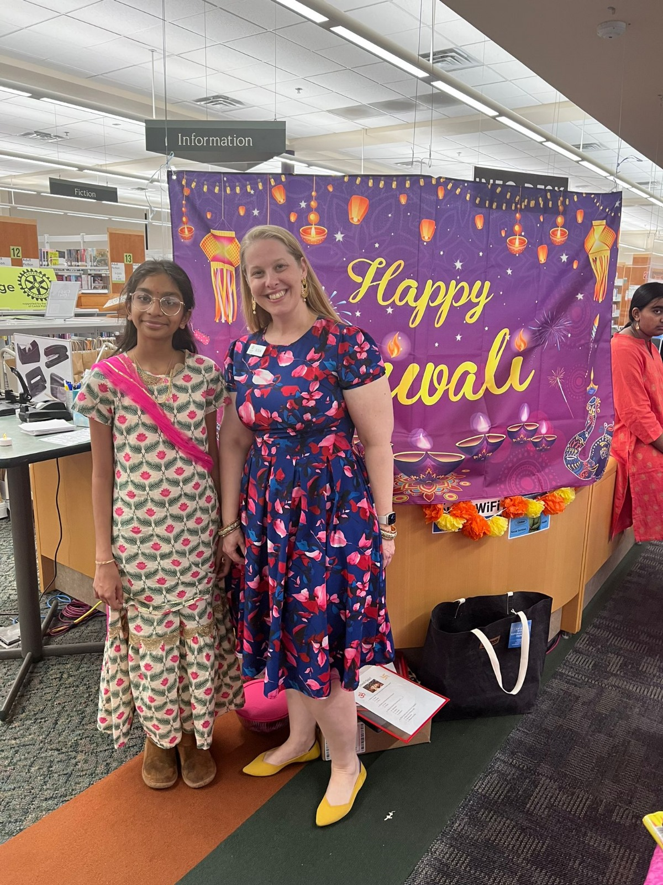
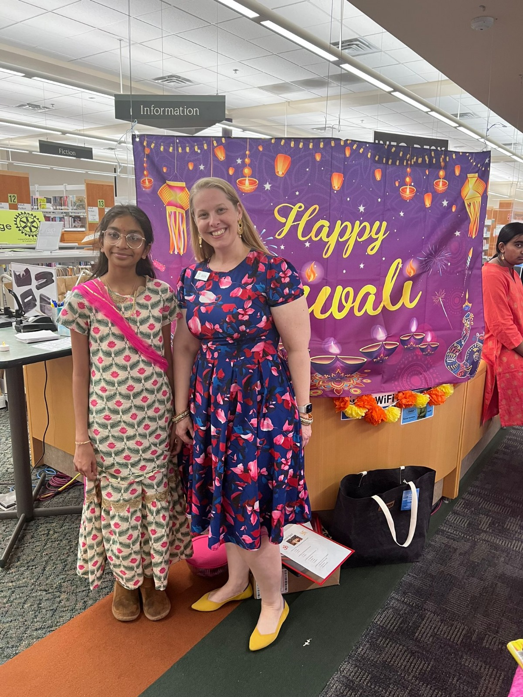

Diwali at Cedar Park Library


 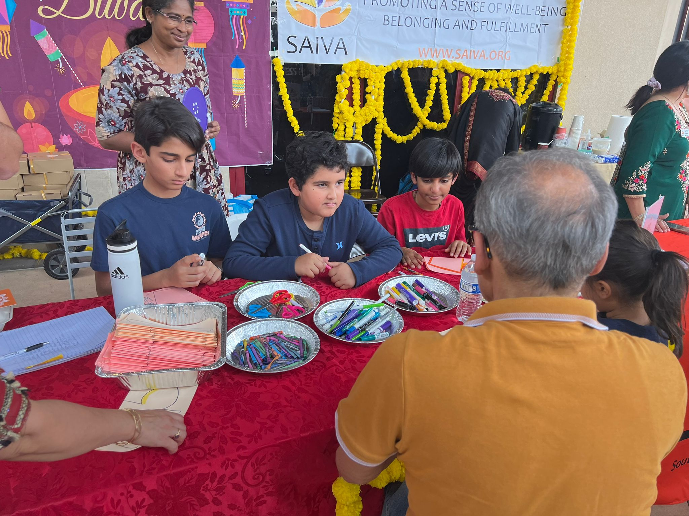
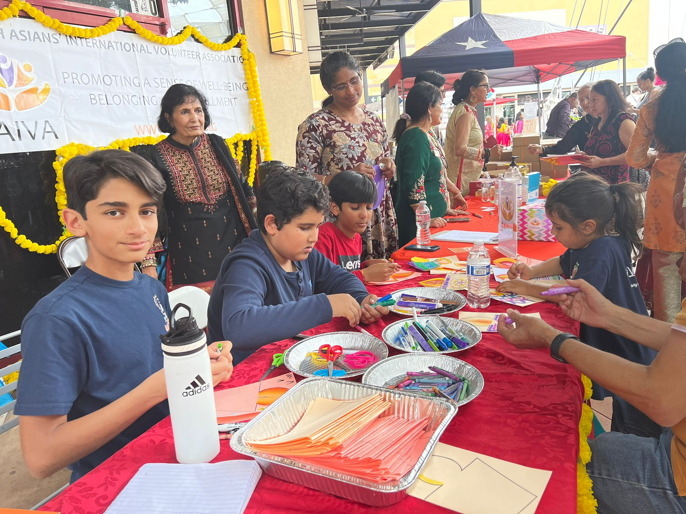
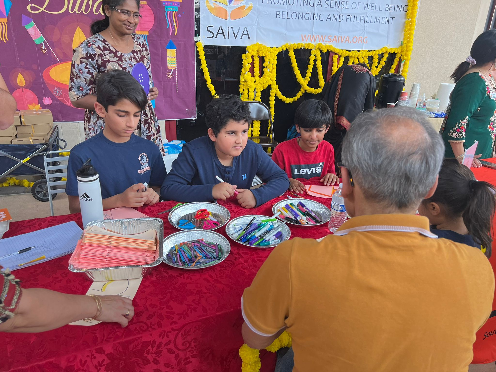
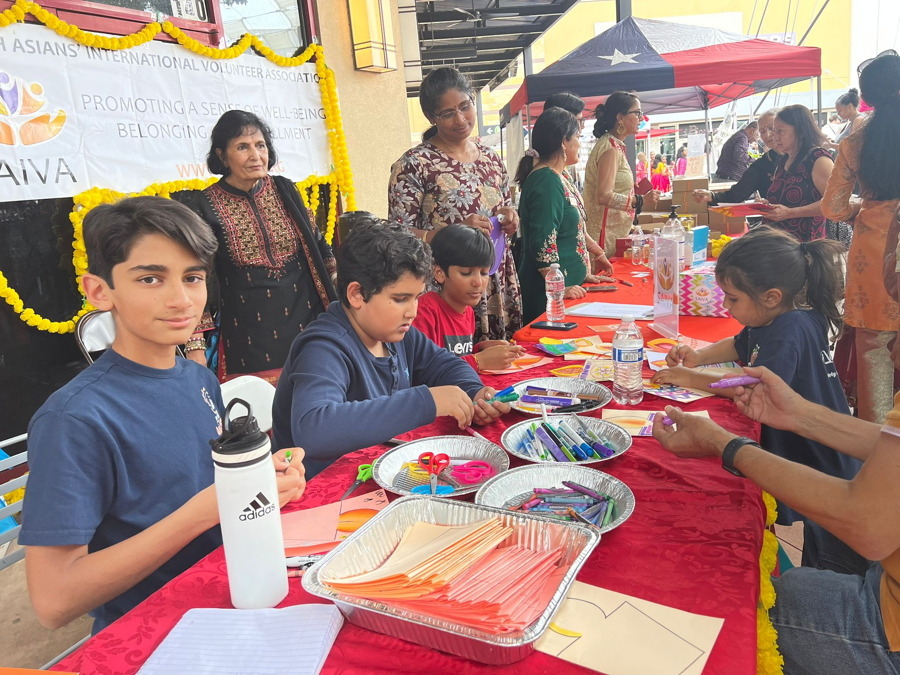
Diwali at The Domain

 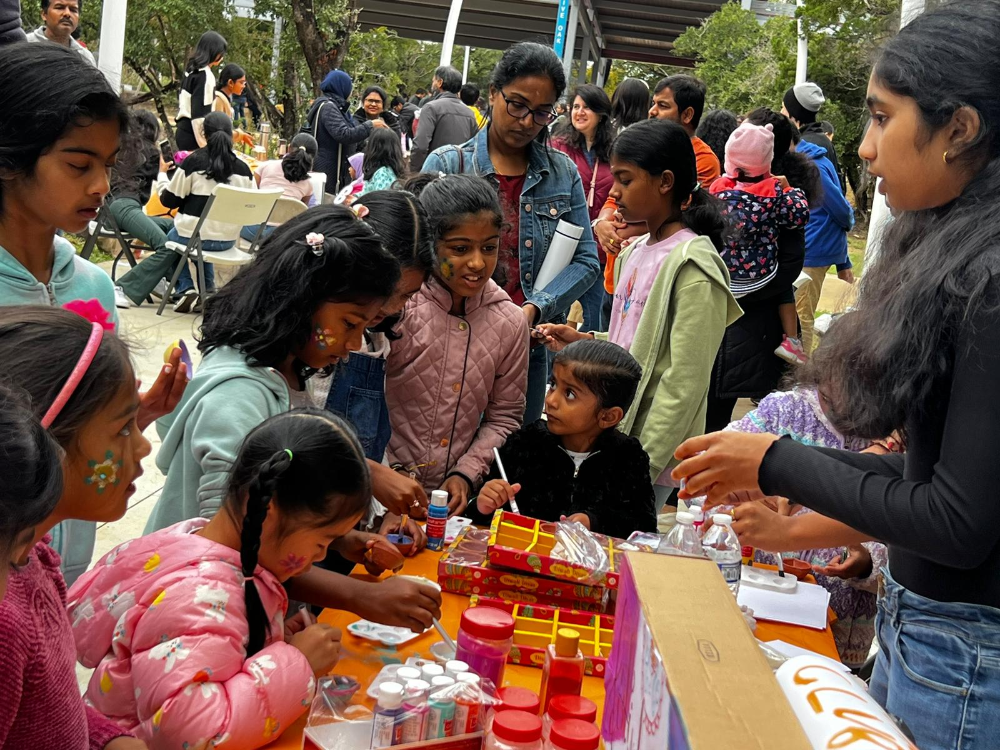
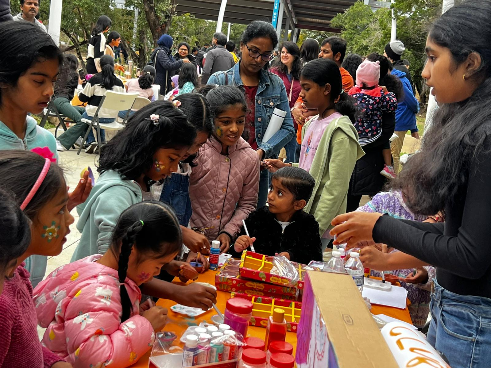
 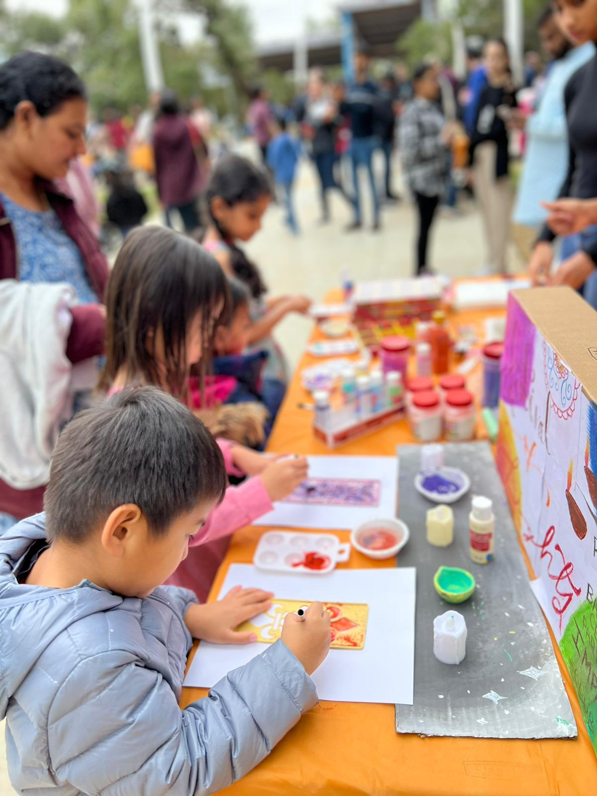
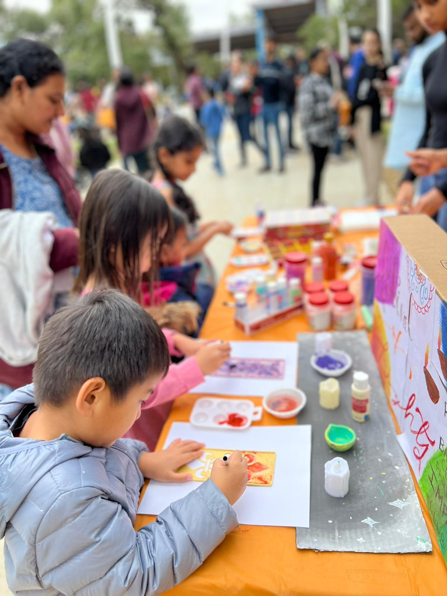
Fall Festival
At the Fall Festival, the IMPACT club handed out tickets to school students, for an evening full of excitement and happiness. We set up a festive booth, filled with diya’s, activities, and joy. There were many people attracted to this bright, shining stall. We sold Indian sweets for people to try, and assisted kids with their drawings. Showcasing unique Indian culture to the community was a wonderful experience for us, and intriguing to those who were listening as well. We’re so happy we get to do more for the community, like helping in food banks, and distributing food for our school’s K-3 movie night. We hope to inspire you, to keep striving towards your goals, and helping your community.
-Aahana Desai (IMPACT Member)
 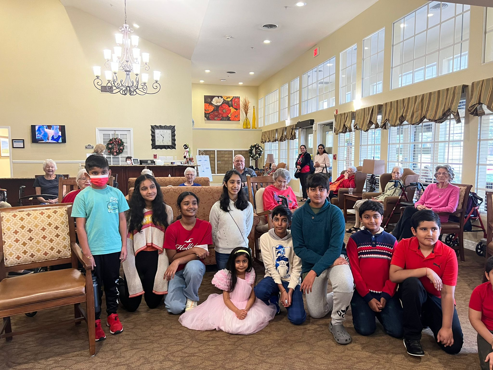
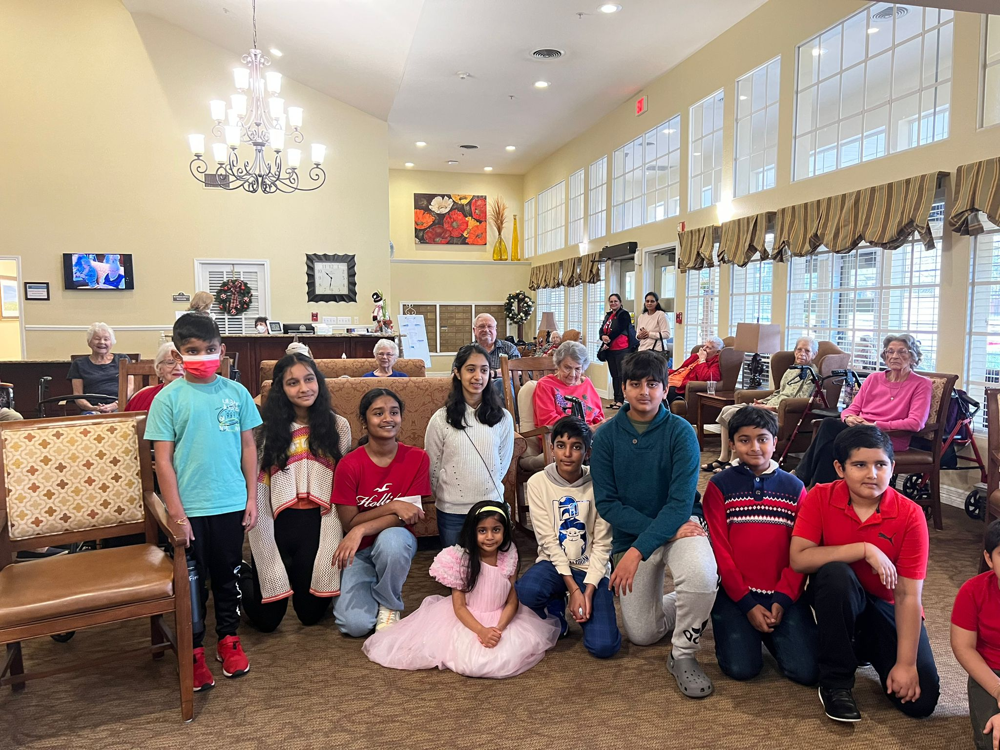
Winter Wishes Acapella

Central Texas Food Bank
Founded in 1982, the Central Texas Food Bank's goal was to provide for those who were hungry in our community. Over the years, this bank has assisted hundreds of families and flourished with donations, mobile pantries, and support from others around Austin.
Our IMPACT club has been there many times in the past year of 2023-2024, and will continue to succor in packaging, cleaning, sorting, and distributing food around Texas. On March 9th, 2024, we helped with over 2,500 meals, which is around 3,000 pounds of food! These experiences greatly influence our thoughts about volunteering, let alone donating. We feel that the opportunity of being able to help with such issues is more than an act, it’s a change.
-Aahana Desai (IMPACT Member)

K-3 Movie Night
.jpeg) 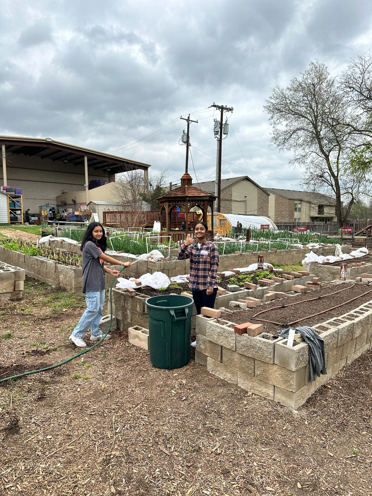
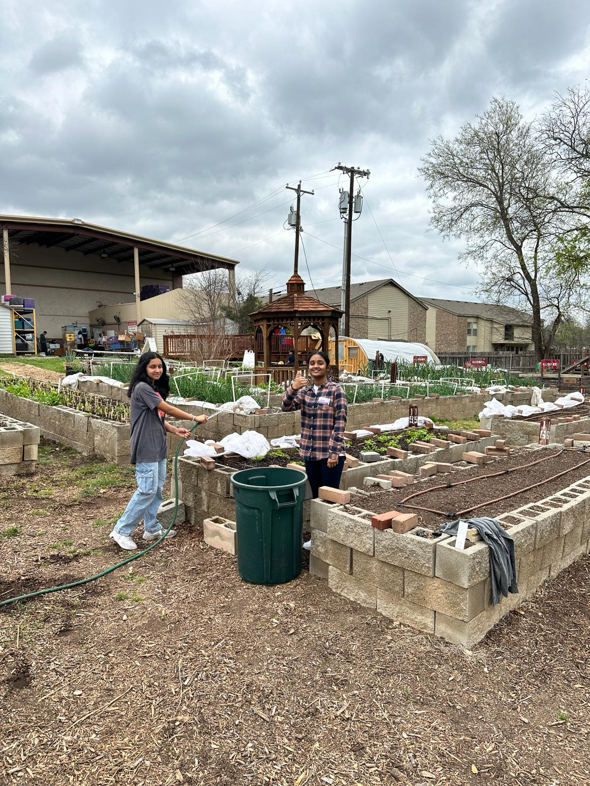

Austin Allies
Treats for Troops
To support those who work hard to defend their country, and those who keep you safe, you can do so much. Our IMPACT club gathered candy from various students around BASIS Cedar Park, storing it safely, to then hand out to troops during our event. We raised over x grams of candy, and our effort ended in a huge success! (still working on it)
-Aahana Desai (IMPACT Member)
Refugee Clothes Gathering
During the Refugee Clothes Gathering, IMPACT Club gathered clothes from their community that people were going to get rid of or donate, sending them to a location for redistribution through SAIVA.
-Aahana Desai (IMPACT Member)
RRASC
Our IMPACT Club got the opportunity to volunteer at RRASC, or the Round Rock Area Serving Center. We have been doing so for the past month. We’ve been going there at least once every week to aid with activities such as gardening, restocking, cleaning, and organizing.
The plants we water and care for are harvested to give to those in need, and the offices we vacuum and wipe down are for the Round Rock district workers. We restock food in the main pantry, also to be distributed to those who need temporary assistance. Not only are we helping people, but we’re building a strong community, where everyone stands for each other.
-Aahana Desai (IMPACT Member)